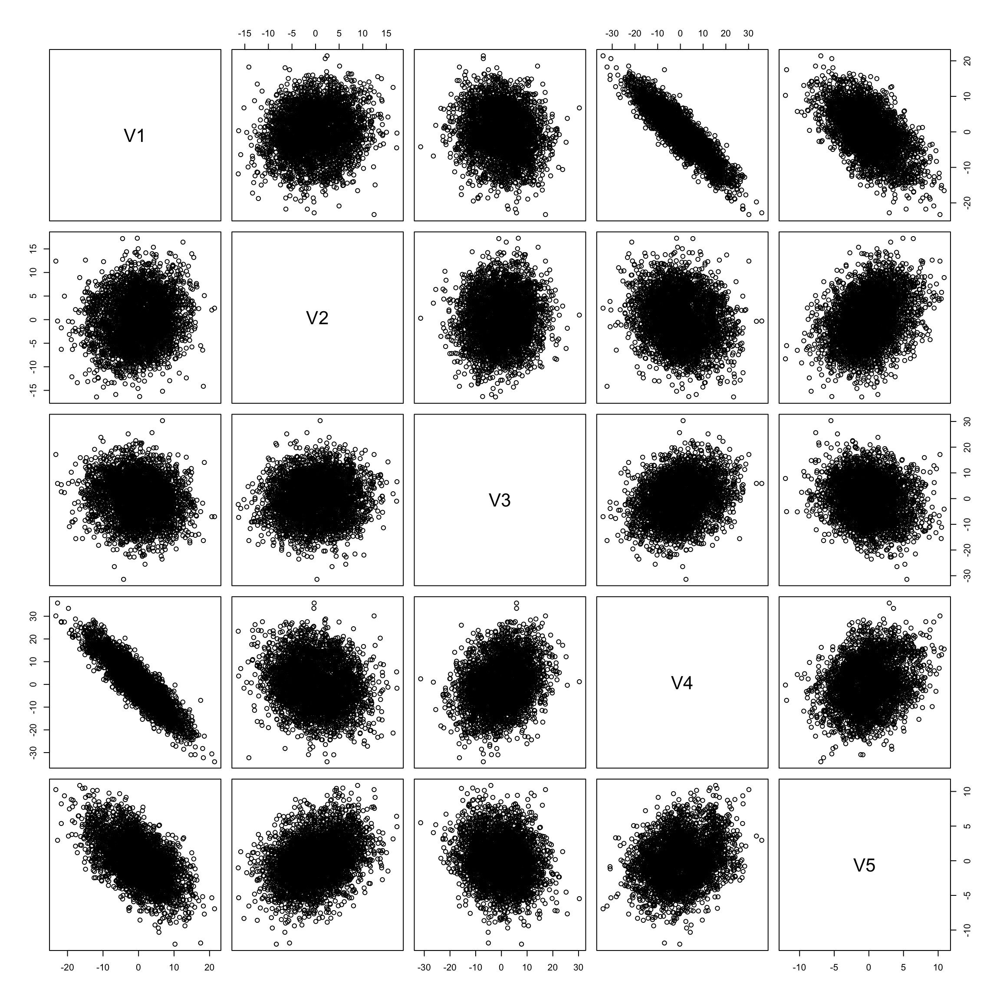
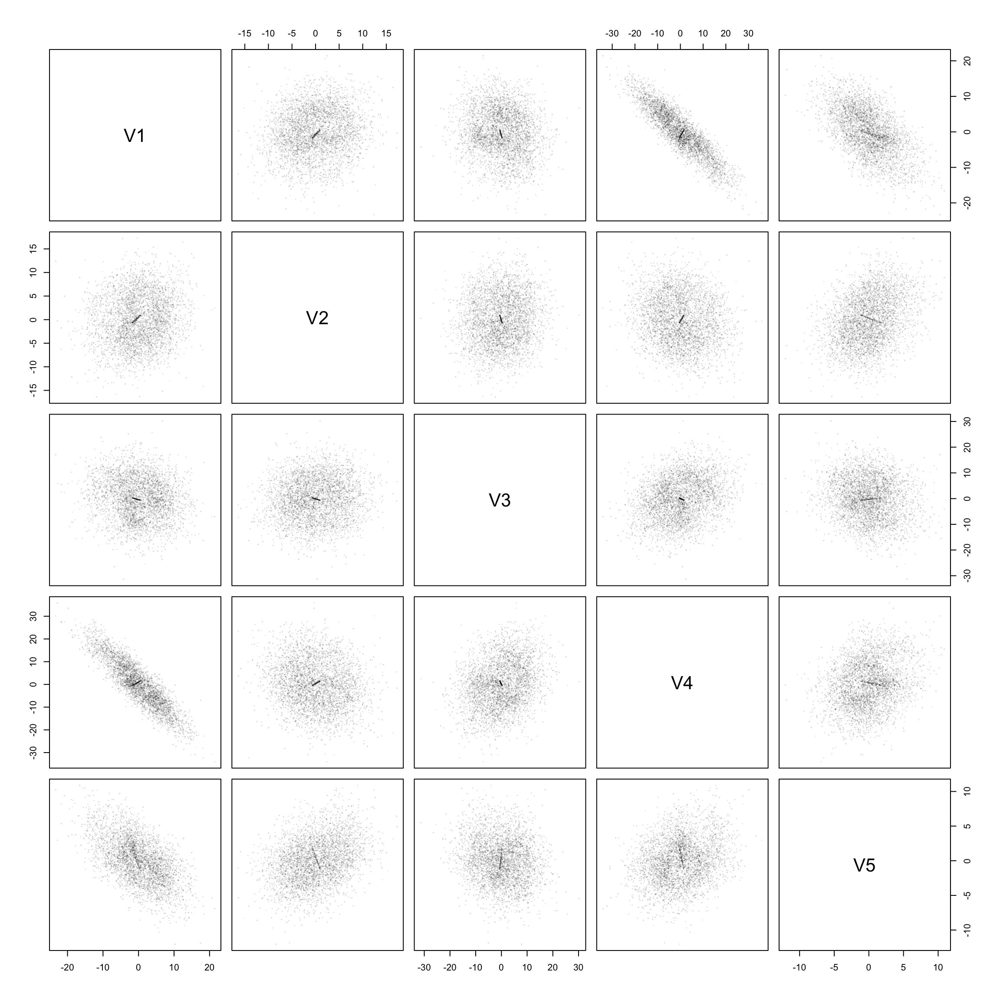
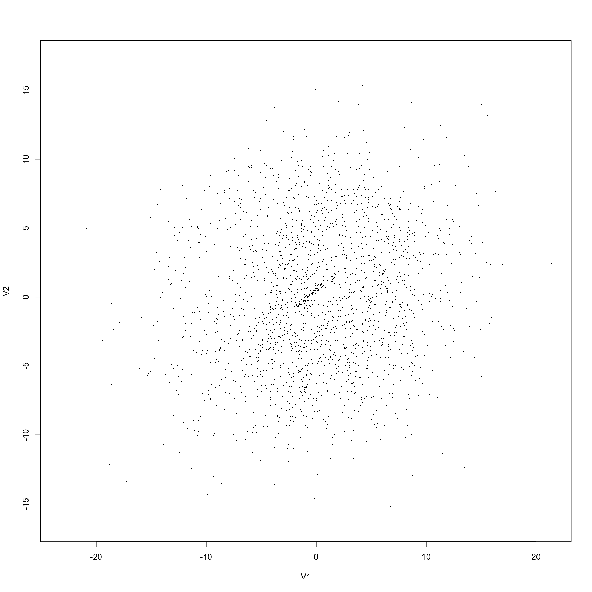
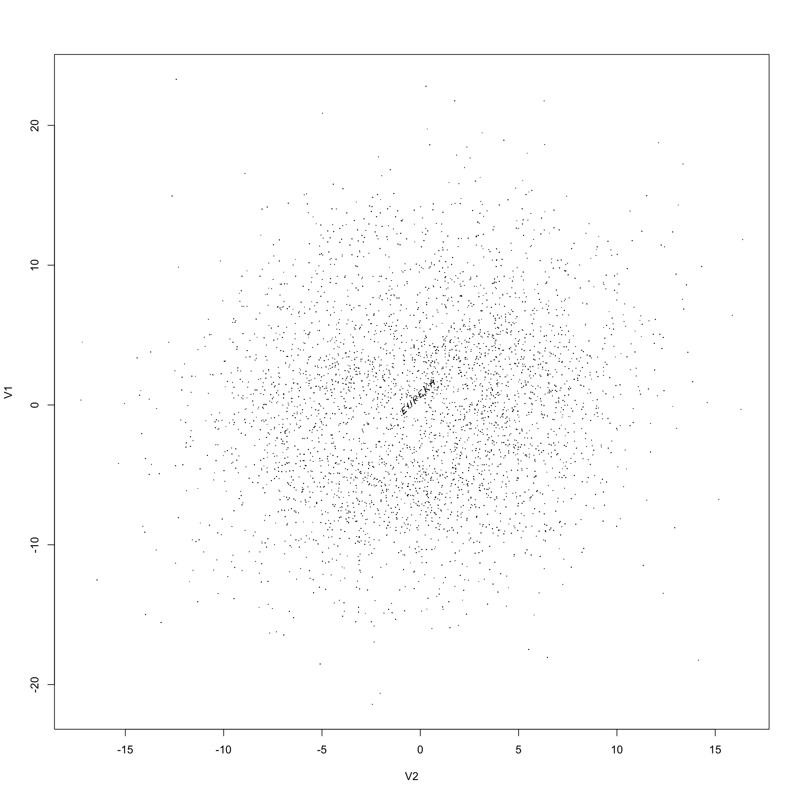

The 1986 Joint Statistical Meetings had a Data Expo where participants were given a dataset to show off visualisation approaches. The “pollen” “data” was a \(3848\times 5\) matrix purporting to be five measurements of 3848 pollen grains. In fact, the data were artificial and consisted of an Easter egg surrounded by an ellipsoidal shell.
With the displays of forty years ago it was quite hard to find the hidden structure. Some form of multi-dimensional slicing was probably needed to detect any anomaly (though Di Cook and Ursula Laa give a new ‘tour’ that should have worked if it was available back then)
With modern displays it’s much easier. I’m using a 12in x 12in R display device here, so you may need to zoom in on graphs somehow – and if you’re trying to get the effect of a 4K monitor on your phone you might be out of luck.
pollen<-read.table("~/pollen.txt")A first try doesn’t quite work
pairs(pollen)
but with smaller plotting symbols and a bit of transparency we do get somewhere
pairs(pollen, pch=".",col="#00000020")
If you’re looking at this on a reasonably large screen you’ll see a point cloud with a little linear structure at the centre. Picking the first panel to get a bigger image we see
plot(pollen[,1:2], pch=".")
and switching axes to make it easier to read
plot(-pollen[,2:1], pch=".")
No fancy statistical graphics ideas are needed, just enough space to see the points through the cloud. You easily could make a version of this that still needed some clever multivariate displays; increasing the number of masking points by a couple of orders of magnitude would probably do it. But it’s increasingly true that you can see a lot just by looking